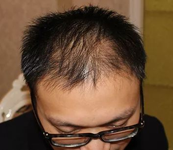
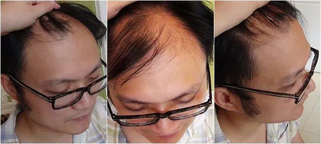
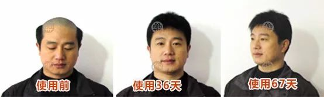
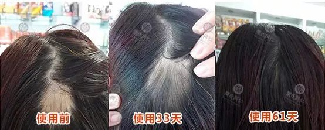

脱发、头发稀少，教你一个便宜好用的生发方法 ！
脱发、秃顶、白发
让你垂头丧气，自信全无！
让你遮遮掩掩，无法直面人生！
让你职场不顺，事业受阻
光秃秃的脑壳！你还没受够吗？？？
那么，请您认真的往下看，或许这将是改变你人生的唯一机会！！
下图是我的生发前后对比照
3年前的我，现在的我，你相信吗？

三年前 脱发悄然而至
我叫王一帆，今年29岁，3年前，硕士毕业后就进入了广发银行，终于成为一名理财部经理，而我大四开始交往的班花女友，也在银行工作。品相端正、专业素质高的我，短短两年就成为了分行的销售冠军，收入节节高升。那年的春节，我们互相见了家长，开始谈婚论嫁！
可是业绩越高，工作压力也越大，社交应酬、喝酒抽烟、通宵达旦是常有的事情，从那时候开始，脱发的劫难从天而降， 短短半年时间，不断的大量脱发竟然让我成为了秃顶， 我的外表一落千丈，每天都不敢照镜子，心情也越来越坏。
脱发时的我

所谓福无双至，祸不单行，作为投资理财经理，外在形象十分重要，头发脱落以后，业绩有了下滑趋势，同事们也开始指指点点，甚至女友也开始有意无意的指点说道，我觉得生活完全被改变，苦不堪言。
拿什么拯救我的头发？
为了拯救头发，我采取了各种办法，去了各大医院咨询，问诊，小到民间流传的古老偏方，用尽了各种生发产品，凡是听说有点效果的方法我都不放过，但每次尝试都以失败告终，没有丝毫的变化。

人生打击 再次降临
金融行业，个人形象直接影响客户感觉，慢慢的，多年老客户把资金转投别的银行。3年以后，我终于被调离了岗位，成为一名普通职员，我的女友对我也失望透顶，终于在一次激烈争吵以后，她摔门而去，再也没有回来。 酒醉、哭泣，痛苦，那个晚上， 我发誓要想尽一切办法长出头发，可是错路走得太多，自己已经彻底绝望！

一次非常偶然的机会，去同事家取文件，恰好他的邻居是个学医的，当他得知我的情况后，竟然说有办法治好我的脱发，说实在的我一点都不惊喜，因为我真的失败太多次了。可是他说完就回家去取了一个小药包拿给我，出于礼貌我就收下了，回去后我不太在乎的把这包东西扔在一边，没再管它。
几天后，老妈打扫桌子，问我要不要，不要就扔了！我突然觉得人家好心好意的，不用还是有点对不住！于是就试着用了一下，没想到正是这个决定改变了我的以后......
生发前，前额光秃秃的只有几根毛发

使用半个月，开始长出很多小绒毛，幼发

用了2个月，头顶与前额的新发开始长长了

用了3个月，新发长出并乌黑浓密

真的没有想到，只用了90天
我找回了失去5年的自信，又回到那个英俊潇洒的我

我最近的照片
想起来，有些日子没和乐氏同仁育发的官方客服联系了，当初还开玩笑：等我相亲成功，一定登门跪谢！！如今，正试着跟一个银行白领约会，我想，最好的感谢就是把这个好方法介绍给更多有着同样痛苦的朋友，正是乐氏同仁育发用三个月时间帮我长出一头浓密乌发，是他让我得以重生，感谢研究出
乐氏同仁育发的乐觉心先生！
如果你也有 遗传性脱发、斑秃、脂溢性脱发、早秃、产后脱发、儿童脱发等 ，添加乐氏同仁育发官方微信号： ,教你生发解决头皮问题。
生发真有这么困难吗？你没找对方法！ 乐觉心，中国医药三百年老字号——同仁堂第十四代嫡系传人，中国百年育发项目创始人，中国纯天然生发第一人。

1952年，同仁堂第十三代人乐崇辉携正宗祖传秘方迁居台湾，创立台湾（乐氏）同仁堂。2015年，一直心系大陆的同仁堂第十四代传人乐觉心拒绝多家日韩药企的重金利诱，携四百多种祖传秘方回归大陆， 实现了“昔日御药供奉，今日养生共享”，复兴中医国粹的伟大使命。
臺灣樂氏同仁堂回歸大陸
乐氏同仁传人 携祖传生发秘方归来
公布止脱生发秘密
△乐崇辉（乐氏同仁第十三代传人）与其子乐觉心（乐氏同仁第十四代传人）携祖传秘方归来
乐觉心先生带来的“乐氏同仁育发”，7天止脱，21天生发，3个月荒漠变绿洲 ，已有超100万脱发困扰者，用他的方法，告别脱发，长出健康浓密的新头发，不管是先天稀少、产后脱发、脂溢性脱发，还是斑秃鬼剃头，治一个好一个，十个用十个长！而且纯天然，纯植物，零过敏，零刺激！
脱发一直是个世界性难题，在中国，有1亿多不同程度的脱发困扰者，而脱发带来的困扰、自卑却是毁灭性的！ 早在清朝，同仁堂为慈禧御贡的育发方就已经为慈禧解决了脱发、白发的困扰，而且是纯植物的，绝对绿色安全。医者仁心，如何让御发古方新用，造福广大脱发人群？
乐觉心先生与台湾同仁堂团队历时10年， 将慈禧御用的滋养育发方与台湾浓缩小分子植萃科技结合 ，研发出高效、便捷的止脱育发方案，让海岸两峡100多万名脱发困扰者成功止脱生发，并获得了获国家药监局批准文号（国妆特字：G20151171），他的育发方案有3个特点：
一、清宫御药大方，中西技术合璧 ，由中国医药300年老字号“台湾同仁堂”研发，曾是慈禧乌发固发的御用秘方； 二、治一个，好一个！ 不论男女，不分年轻老幼，不管是先天稀少、产后脱发、脂溢性脱发，还是斑秃鬼剃头，都能焕发重生。 三、安全、见效快，7天止脱，21天生发，3个月荒漠变绿洲。 纯天然，纯植物，零过敏，零投诉。 添加乐氏同仁育发微信号： ,教你生发解决头皮问题。
【台湾同仁堂 百年御发大方】
中西技术合璧 靶向激活
外洗内养 秀发重生
中医是华夏国粹，经过几千年的历史积淀，认为毛发荣枯验证了每一个人的气血盛衰，这是古人在医学史上的一大创举，至今仍然是临床诊疗毛发疾病时最方便、最直观的方法。

传统中医将脱发称为“ 发蛀脱发”、“蛀发癣 ”。认为血虚、血瘀,会导致全身的血液循环疲软，无力将营养物质输送到“头顶”，血路受到阻塞，头发的毛囊得不到滋养进入休眠状态失去活性，日积月累，头顶的皮脂大量分泌，真菌头螨不断滋生繁殖，侵蚀发根造成脱发。
一张图让你看懂脱发的奥秘

台湾同仁堂已经治愈数万名脱发困扰患者，在这么多的临床案例中，只要脱发，在毛囊检测仪下观察，就一定有2个显著特点： 1、真菌头螨大量繁殖，堵塞毛囊；2、毛囊营养不良，处于休眠状态。 这与中医理论不谋而合，因而清除皮脂真菌、养血化瘀、激活毛囊是生发的关键！

台湾同仁堂，以百年清宫御发大方为根基，采用长白山野山参、当归、川首乌、淫羊藿等数十种名贵中草药群，结合宝岛台湾浓缩小分子植萃技术。形成中西合璧的的整体育发方案， 一清二养三激活，运用中医论治，分症调理，靶向激活，外洗内养，让你摆脱脱发困扰!重拾自信!重回颜值巅峰！

第一步：除菌清螨。 （以皂荚、当归等具有活血化瘀、疏通经络的浓缩小分子植萃精华，抑制皮脂分泌，清除真菌头螨。）
第二步：养血化瘀。 （以三七、人参、何首乌等具有生发滋养的浓缩小分子植萃精华改善毛囊营养供给状态，提高毛囊对营养的吸收率，滋养发根与毛囊）。
第三步：激活毛囊，秀发重生。 （以台湾同仁堂御贡大方为基础，采用数十种名贵中草药群，结合浓缩小分子植萃技术，古方新用，应对所有脱发症状，疏通毛囊保证营养输送系统畅通，靶向激活罢工毛囊，恢复生长功能。）
在毛囊检测仪下观察：
A组是使用乐氏同仁植萃精华一段时间后的毛囊；B组是使用之前的毛囊。可以清晰看到，A组毛囊充盈通畅，活力旺盛；B组的毛囊则堆满了皮脂垃圾，萎缩堵塞，可以看出乐氏同仁育发植萃精华激活疏通、激活毛囊的强大功效。

【名贵中草药群，浓缩小分子植萃科技】
7味珍品，7重功效，7大惊喜
“ 炮制虽繁必不敢省人工，品味虽贵必不敢减物力 ”一直是台湾同仁堂的祖训。台湾同仁堂甄选 长白山野山参、川首乌、三七、当归、皂荚、野山姜、淫羊藿 等名贵中草药群，由台湾最新植萃科技提炼出最核心的活性成分，每一样都是珍品中的珍品，精华中的精华。每天用，坚持用，7大惊喜看得到：

1、7天止脱发 ，巩固发根，箍紧头发，发丝牢固不易掉。
2、21天长新发 ，21天头顶长出小绒毛，用不了多久，这些细长的小软毛，就会长成健康漂亮的黑头发。
3、真菌头螨一扫光 ，多余油脂被分解清理，头皮、头发不再黏糊糊、油腻腻。
4、滋养发丝 ，发丝不再焦黄、粗糙、爱分叉，变得营养有光泽。
5、强健发根 ，发根、毛囊恢复健康状态。
6、修复损伤 ，染发、烫发的损伤得以修复，头发柔韧有弹性。
7、3个月荒漠变绿洲 ，满头秀发，乌黑浓密，人人羡慕。
添加乐氏同仁育发官方微信号： ,教你生发解决头皮问题。
乐氏同仁止脱、生发效果奇佳，最让人津津乐道的是提升了个人形象，重塑青春感觉，找回了自信。调查显示，只要连续使用乐氏同仁3个月以上，黑亮的头发就能长出来。且看这些用过的朋友的情况，有他们的生活照为证。
谢顶大叔 长出满头黑发 年轻十岁
真的是令人难以置信。脱发十年几年，本不到40岁，别人都以为陈先生50多，看着像老头。陈先生用了乐氏同仁育发液三个月就长出了满头黑发。

原来头油多，头皮痒，一梳掉一地，一抓一大把，头顶脱得又光又亮。出门都要戴帽子，儿子的小学同学们以为陈先生是他爷爷，真是特尴尬。现在头油、头痒消失，脱发掉发完全停止。头部被黝黑浓密的新发覆盖，整个人精神焕发，明显年轻了十几岁！
秃顶程序员变帅哥 爱情事业双丰收
“秃顶老哥”马先生终于找到对象了，还是个大美女。以前介绍的对象，见一个崩一个，父母着急，自己苦恼。

自从用了乐氏同仁育发液，稀疏的头顶很快就长出了黑茬茬，慢慢的头顶就变得郁郁葱葱，人也变帅了。现在的对象对小董很满意，俩人已经在商量结婚的事。
产后脱发变大妈 秀发长回有自信
黄小姐刚生完宝宝半年，头发掉的厉害，就像干枯的野草，轻轻抓一抓就掉，头顶的头皮都漏出来了，看上去又老又憔悴，像个中年大妈。

在医生朋友的推荐下，用乐氏同仁育发液进行调理，一个月后，脱发明显减少，头皮不油不痒了。现在用乐氏同仁育发液三个月，头顶头发全长出来，头皮盖住了。头发变得浓密黑亮，人也年轻了，重新找回了自信。
添加乐氏同仁育发官方微信号： ,教你生发解决头皮问题。